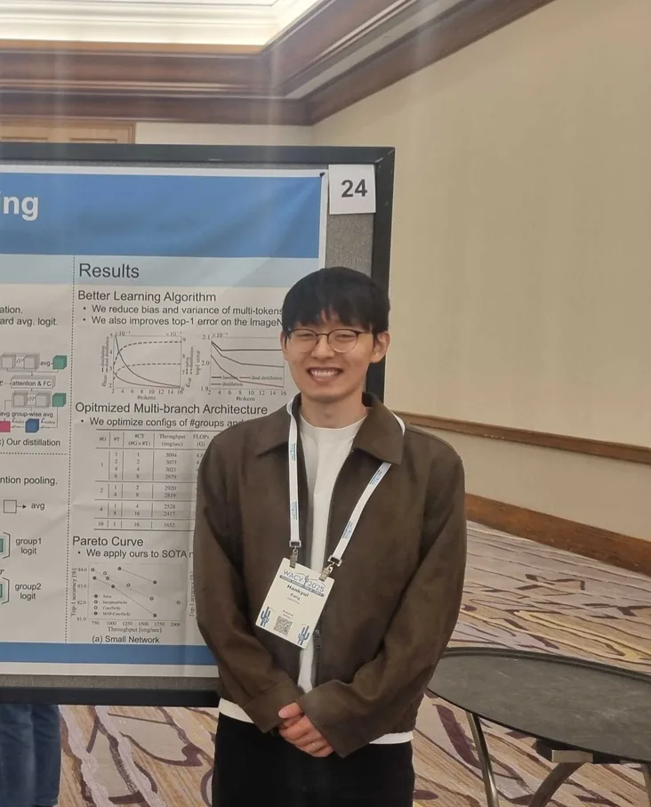
I am Hankyul Kang, a Ph.D. candidate in the Department of Artificial Intelligence at Ajou University in Suwon, Korea, where I am advised by Prof. Jongbin Ryu in the Multi-Modal Artificial Intelligence Lab. I joined the lab in January 2021 as an undergraduate researcher and have stayed there since, moving into the doctoral program in March 2022.
I am interested in advancing the frontiers of state-of-the-art algorithms to achieve breakthrough performance. My expertise lies in improving efficiency through architectures, compression, and learning algorithms for vision models and large language models. My work spans four directions:
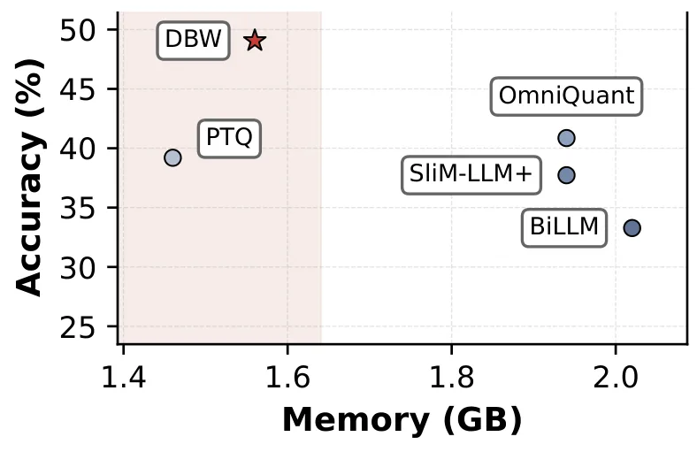
Keywords: “LLM compression, pruning, quantization, differentiable bit-width, ultra-low-bit memory footprint, batch-size agnostic throughput gain”
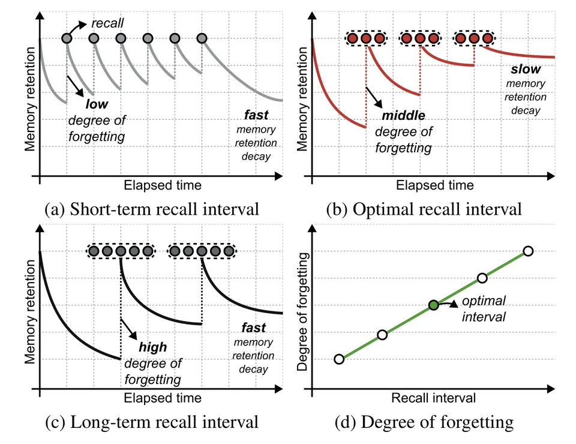
Keywords: “continual learning, forgetting curve, recall interval, long-term memory”
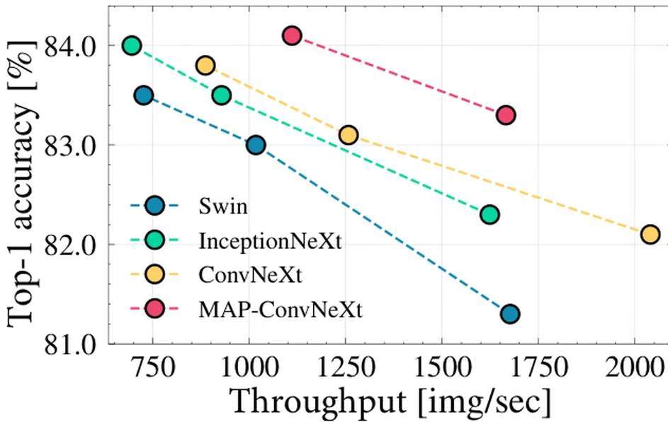
Keywords: “global average pooling, multi-token attention, attention pooling, high throughput network, low parameter overhead”
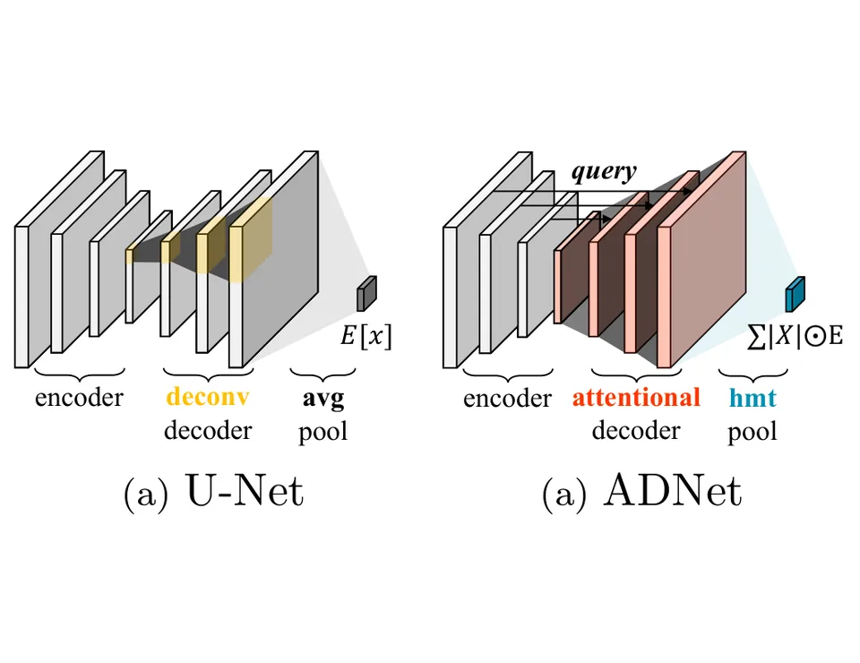
Keywords: “chest X-ray recognition, encoder-decoder, attentional upsampling, resource efficient fine-tuning”
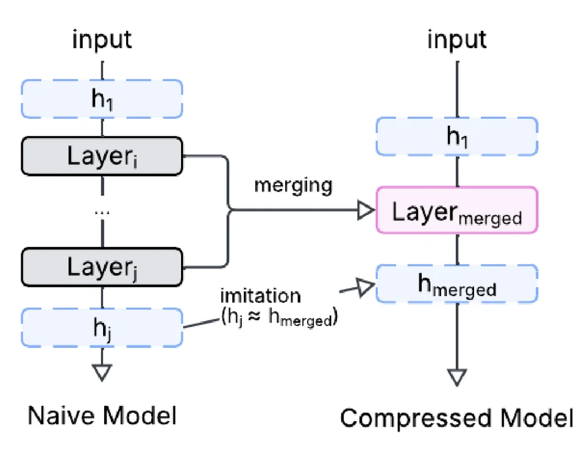
Keywords: “low-power computer vision, model compression, layer imitation, mobile NPU”
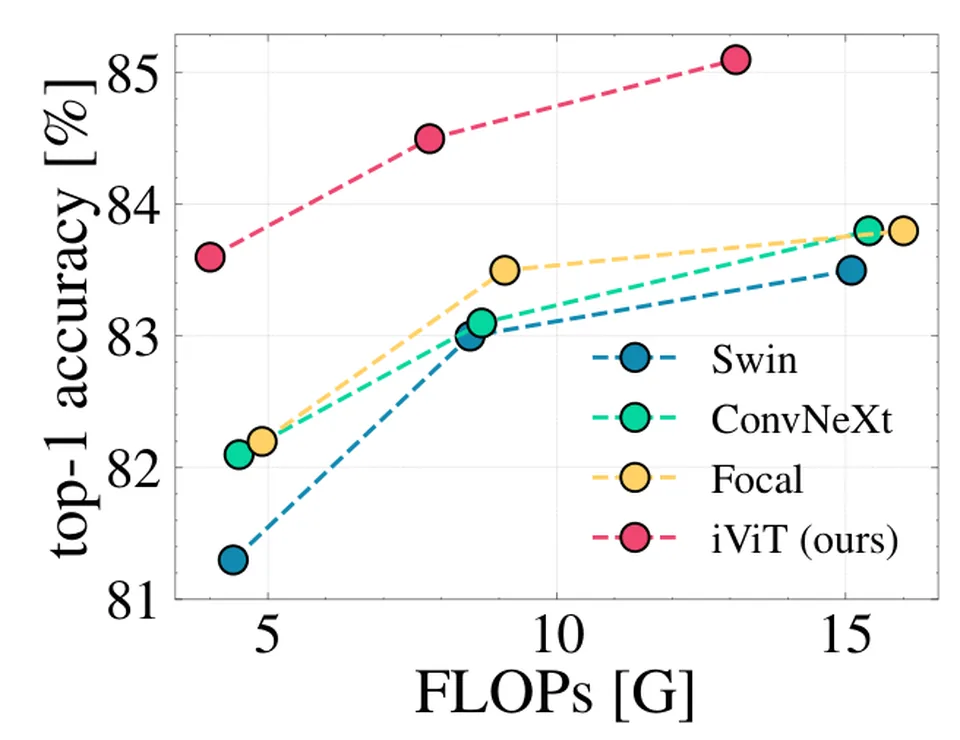
Keywords: “multi-head self-attention, cross-head interaction, linear complexity, scalable architecture, real-world constraint optimization, runtime, memory”
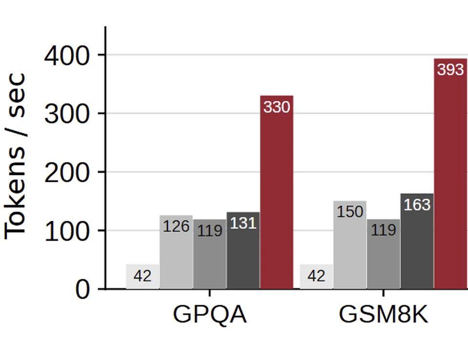
Keywords: “quantized models, speculative decoding, memory bandwidth, compute load balancing, inference throughput”
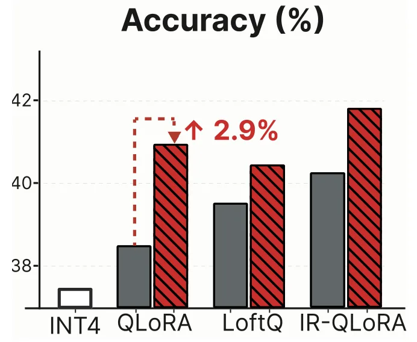
Keywords: “quantized LLM, QLoRA, exponential moving average, low-bit low-rank fine-tuning”
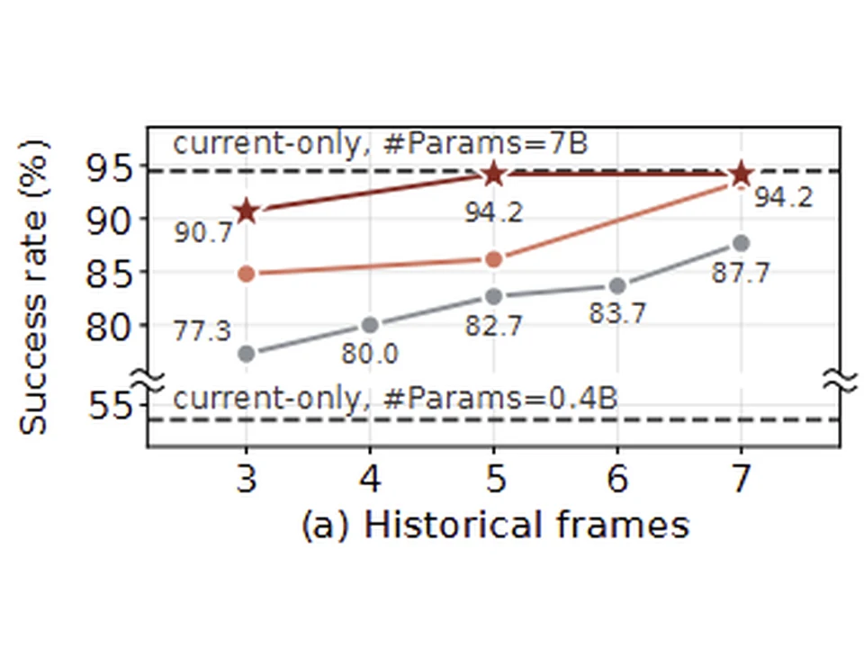
Keywords: “vision-language-action models, multi-frame action generation, temporal redundancy, efficient inference”
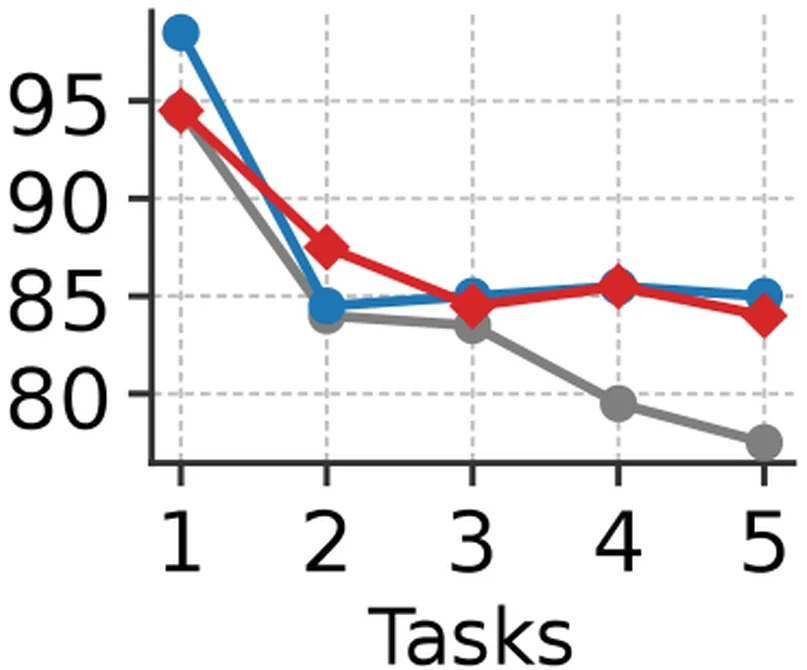
Keywords: “continual learning, decision boundary, out-of-distribution data, long-term memory”
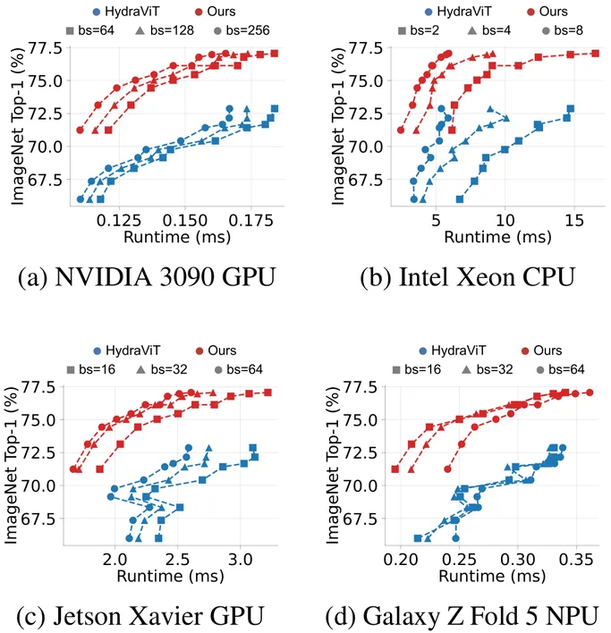
Keywords: “slimmable networks, layer slimming, pluggable decoder, on-device inference, heterogeneous devices, mobile accelerators, inference latency, training time”